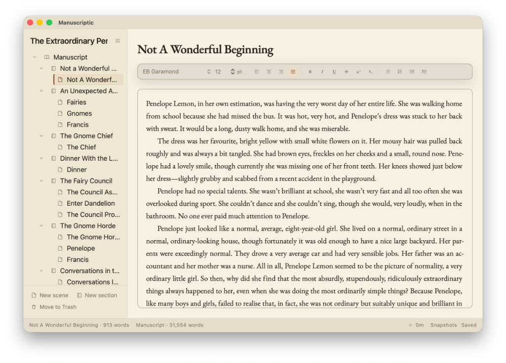

Manuscriptic
Manuscriptic is a writing app for authors. Notes and your manuscript live side by side in a binder. Rich text lets you control headings, fonts, and style. The manuscript can be compiled into a single document for reading, or for submitting for publication.

Download the latest Windows and Mac builds.
- A binder of sections and scenes. Drag them into place.
- Notes for characters, places, and research. Notes never compile.
- Publishing pages for the title, copyright, dedication, epigraph, synopsis, query, acknowledgements, about the author, and a back page.
- Snapshots kept inside the book file.
- Compiles for different outputs, each with its own contents, structure, and formatting.
- Word or PDF from Compile. The book itself is left as it is.
- Rich text. A word can keep its own font and size. A paragraph can keep its own alignment.
- Typewriter mode, statistics, and an inline spellchecker.
- A dictionary for words this book spells on purpose.
- Themes for the desk.
- Import a project from Scrivener.